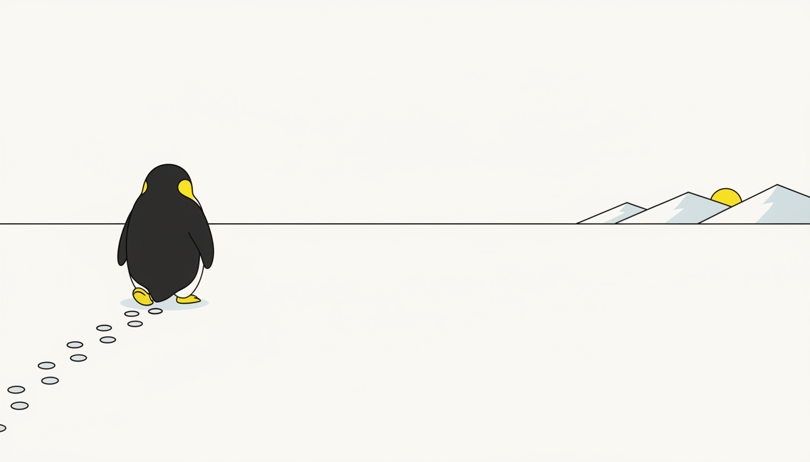
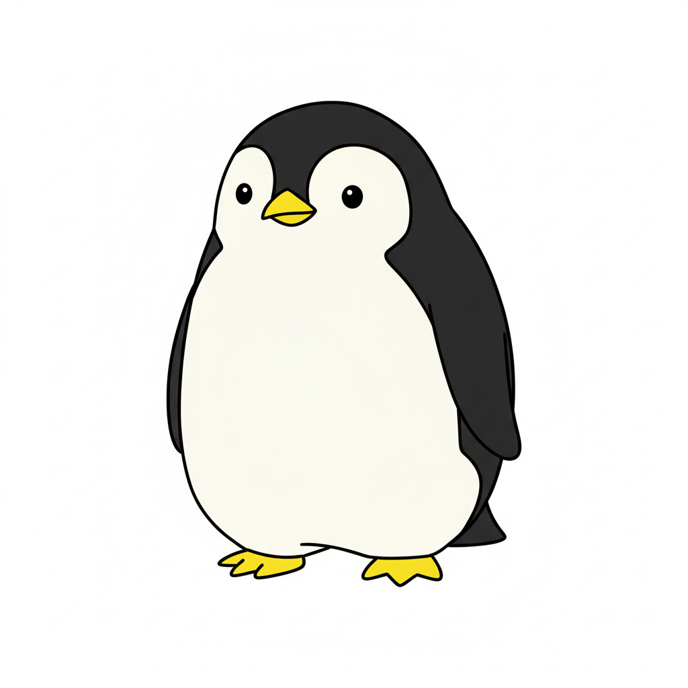
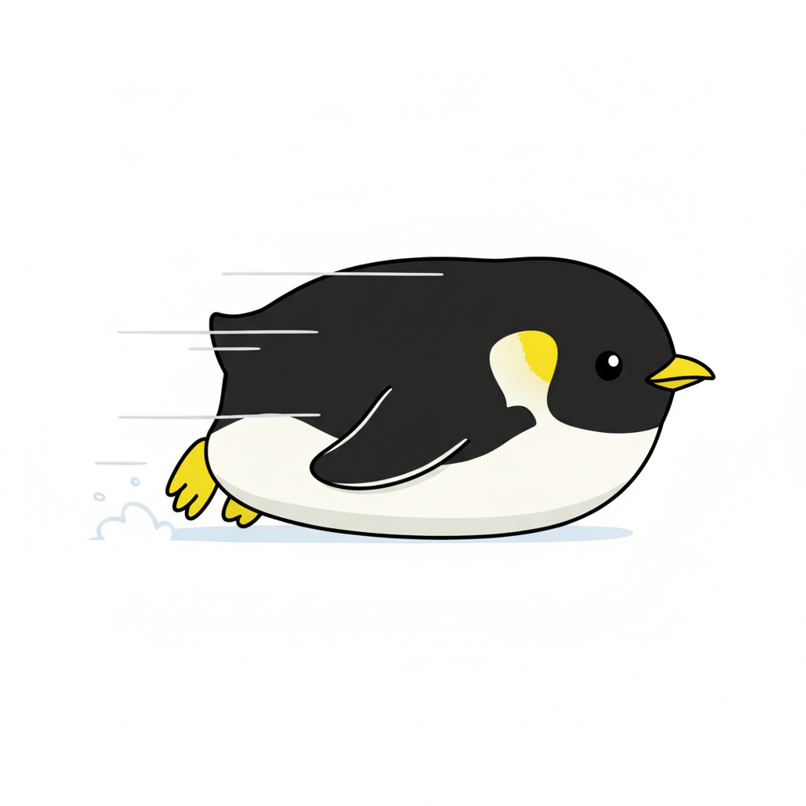
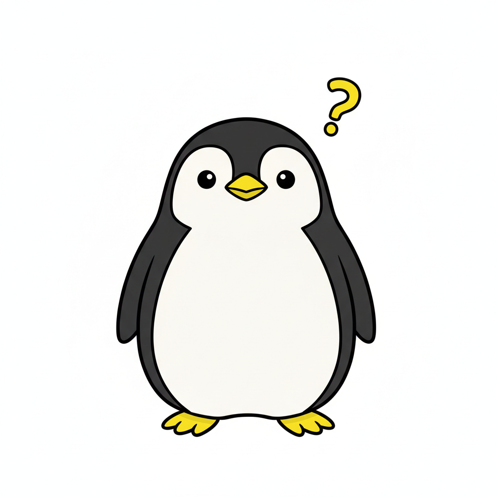
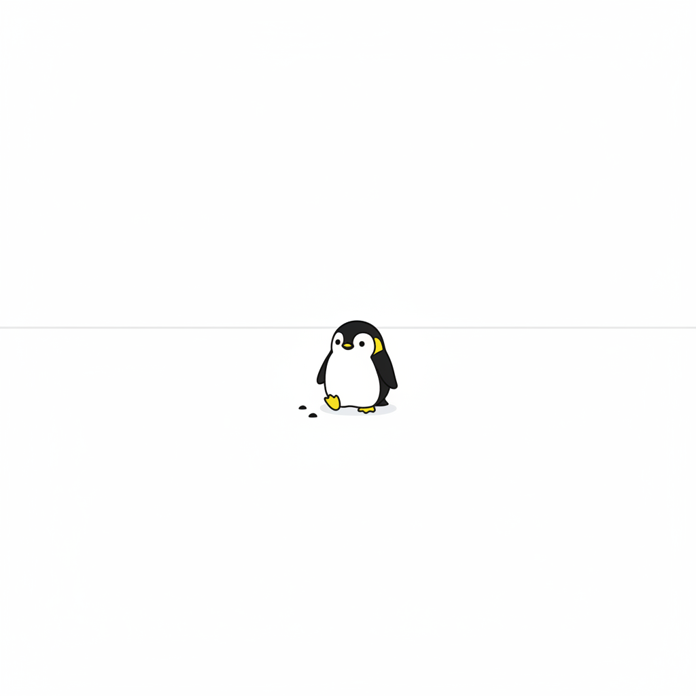
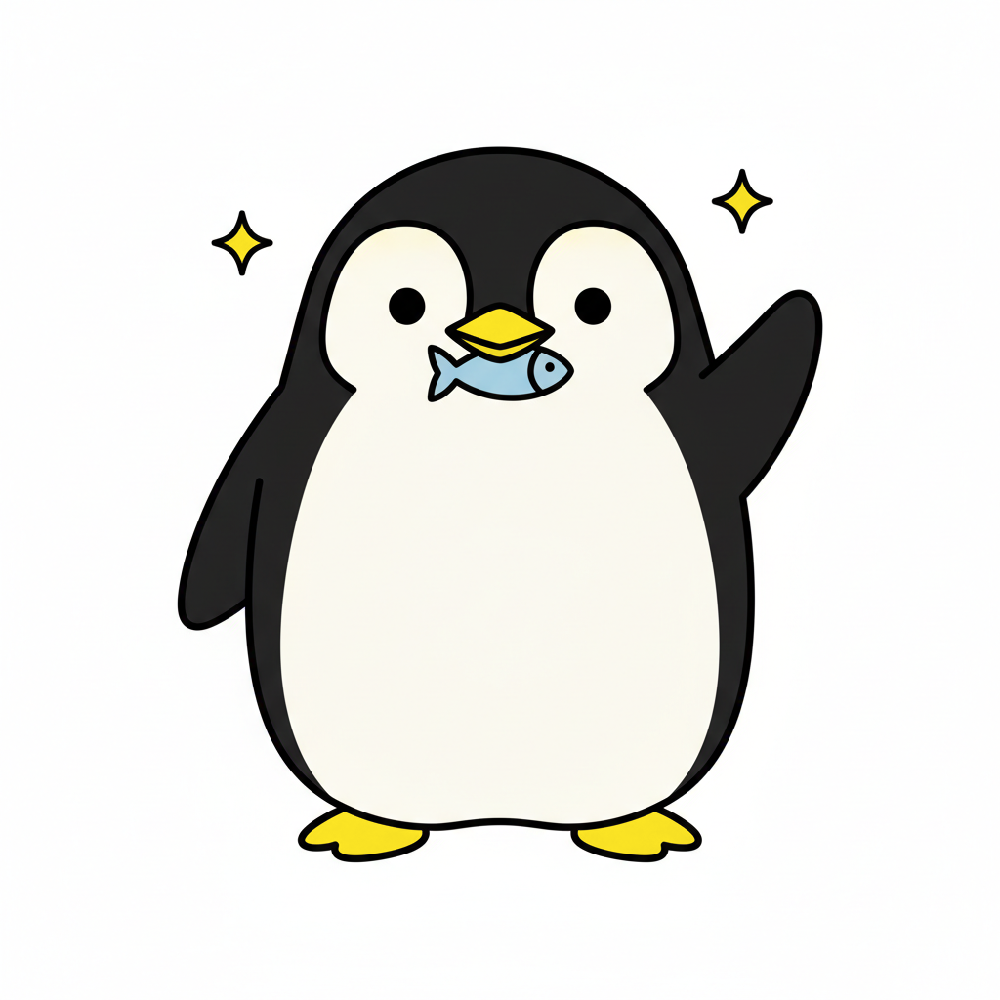
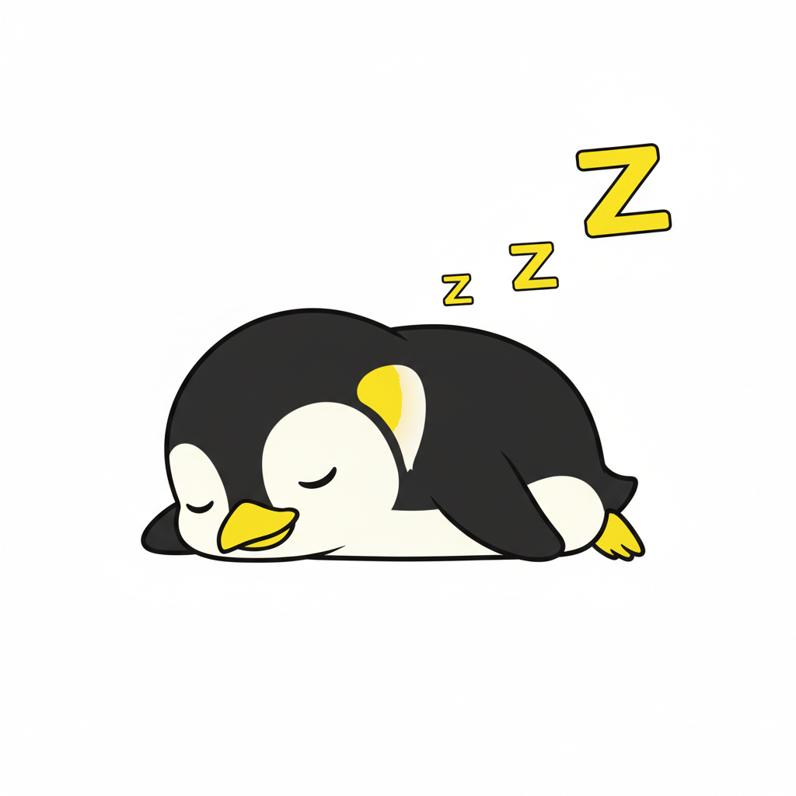
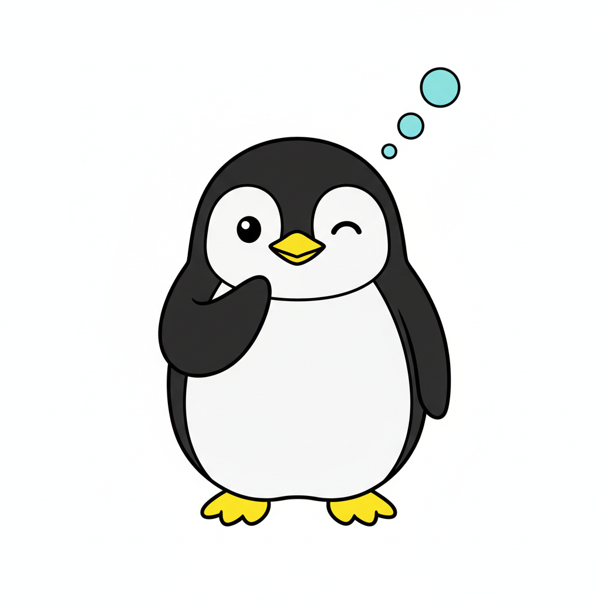
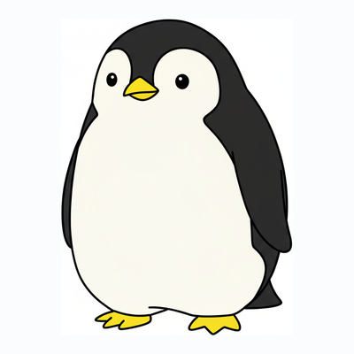

Authored
2026-05-21
#F5DF24) that doubles as the reading-product highlighter, against layered off-white + glacial day surfaces or a layered off-black + dark-grey night sky. The yellow IS the brand — every card, panel, button, chip, and tag is outlined in it; Werner's bill and feet are the same colour; the highlighter used in the reading product is the same colour. One constant across two moods.
Herzog filmed a single emperor penguin breaking off from the colony, ignoring food and shelter, and walking determinedly toward the interior of the continent — toward certain death. The other penguins waddled back to the sea; this one waddled inland. Herzog narrated: "He's heading for the mountains, some 70 kilometres away. Even if we caught him and brought him back to the colony, he would immediately turn around and head back for the mountains."
That penguin is Antiek's mascot. A research workstation is a tool for people who can't help walking into the interior of a question — knowing full well it doesn't repay, knowing full well there's no reward at the end, only more interior. Werner is that. He's the friend who, instead of going back to the colony, decides today is the day for the mountains. The product helps him survive the trip.

"He's heading for the mountains, some 70 kilometres away. Even if we
caught him and brought him back to the colony, he would immediately
turn around and head back for the mountains."
— Werner Herzog, Encounters at the End of the World, 2007
This is the canonical Antiek hero image. Used in: landing page hero, README header, splash screen on first launch, the back of the Storybook cover page. It is never cropped or recoloured. The whitespace to Werner's right is load-bearing — the unknown he's walking into.
Seven canonical poses. Each has a context it belongs in; using a pose
outside its context flattens the brand (cf. PostHog's discipline with
Max). All poses share the same drawing language: solid ink coat
(--werner-coat), white belly (--werner-belly),
ember-orange bill + feet (--werner-bill / --werner-foot),
a single dot eye.







| Trait | What it means | What it isn't |
|---|---|---|
| Determined | Werner walks toward the mountains. He doesn't give up, even when nobody asked him to keep going. | Not aggressive. Not "10× hustle". Not a startup-bro penguin. |
| Quietly funny | Visual humour comes from his small body in vast spaces, from his comic waddle, from his expressions. Never from puns or wordplay in copy. | Not a wisecracker. Werner does not deliver one-liners. PostHog's Max is chatty; Werner is not. |
| A little melancholy | The Herzog reference is bittersweet. Werner walks into the interior because he has to. There's awe in the unknown, not just delight. | Not depressing, not nihilistic. The product is hopeful — the journey is what's heavy. |
| Reverent of the unknown | The "abyss" in night mode is sublime, not scary. Antarctica is the framing — a beautiful, indifferent, vast continent. The product helps you survive in it. | Not gothic, not horror, not edgy. No skulls, no flames, no "darkness" as aesthetic. |
| Single, not a colony | Werner is one penguin. Antiek shows one Werner at a time. There are no Werner-with-friends scenes (the whole point is that he left the colony). | Not a mascot family. No baby Werners, no Mrs. Werner, no Werner-jokes-with-the-team. |
Every card, panel, table, button, chip, tag, and badge across the
entire app is outlined in this yellow. Werner's bill and feet are
this yellow. The highlighter in the reading product is this yellow.
Hover a hyperlink and the underline becomes this yellow. The
topbar's bottom rule and every h2 divider use this
yellow. One colour, everywhere — that's the whole brand mark.
Why this yellow and not PostHog's #FFD329: the
sun has a touch more green and a touch less orange than PostHog's
amber-yellow. The result is sharper, slightly esoteric — closer to
sodium-vapor or hazard-tape than to honey or sunflower. It reads as
precise and modern next to white, and glows with a faint chemical
warmth next to black. Memorable on both sides.
Demo of the highlighter, used inline: Werner is heading toward the mountains, some seventy kilometres away, and although he could be returned to the colony, he would immediately turn around and head back for the mountains.
The day surface is built from ten gradations of off-white going from pure paper down through cool ice tones into deep ink. Almost every background you see is one of these — flat fills are rare; subtle drift between layers is the rule. Antarctica at solar noon: lots of white, lots of cold blue undertone, very little saturation. The yellow outline lands on this like a stitched border on a quilt.
Toggle your OS appearance to Dark and watch this page transform.
Night mode is not a colour-inverted day; it's its own surface — ten
gradations of off-black and dark grey, like a night sky observed
carefully. Tiny CSS-only stars sprinkle the background; the sun
outline starts to glow because shadows now cast in
sun-deep instead of ink. Werner's coat blends slightly
into the sky; his belly still catches starlight; his bill still
burns with the brand yellow.
| Token | Day | Night | Role |
|---|---|---|---|
--sun | #F5DF24 | #F5DF24 | brand outline — invariant across modes |
--sun-deep | #B89A00 | #8A7300 | hover / depth / shadow at night |
--sun-glow | #FCE85E | #FFEC5F | highlight peaks; brighter at night |
--ice-0 / --snow-tier | #FFFFFF | #1B202A | top card face / elevated plane |
--ice-2 | #F4F7FA | #0D1019 | page background |
--ink | #0F1419 | #EEF1F6 | primary text |
| shadow colour | ink | sun-deep | at night, shadows GLOW |
| Werner's bill + feet | #F5DF24 | #F5DF24 | same yellow as the outline — the visual hook |
In the reading product (MasterMdViewer prose, notebook prose blocks,
PDF text-layer selections), the operator's manual highlighter uses
the same --sun. Three layered opacities:
| Token | Value | Use |
|---|---|---|
--sun-hl-faint | rgba(245,223,36,0.18) | auto-suggested phrases (model "I'd notice this") |
--sun-hl-day | rgba(245,223,36,0.45) | operator's manual highlight, day mode |
--sun-hl-night | rgba(252,232,94,0.30) | same, night mode (uses sun-glow so it stays luminous) |
--sun-hl-active | var(--sun) solid | currently-selected highlight (the one the toolbar acts on) |
Implementation rule: highlights are backgrounds + bottom-stroke, never replacements of text colour. Inline: highlighted text keeps its ink colour; the operator's eye still reads the text as-text, while the yellow signals "marked."
Why one yellow for everything: the operator never has to learn what the yellow means in different contexts. Outline = brand. Bill = brand. Highlight = brand. Each reinforces the other; the product feels coherent without effort.
Used in the favicon, the topbar of the in-app shell, social-card avatars, the keychain icon.

ANTIEK| Pose | Animation | Where |
|---|---|---|
| Tobogganing | ~6 fps wobble: rotate -3° / +3° at 200 ms intervals; speed lines opacity flicker. | Loading spinner, streaming-investigation banner. |
| Waddle cycle | 3-frame loop (left-foot, both-feet, right-foot), 300 ms total. Slight body rotation -2° / +2° for waddle bob. | Walking-in transitions, navigation between routes. |
| Sleeping | Belly breathes: scale 1.0 ↔ 1.04 on Y over 2.4 s. zZz letters drift upward and fade. | Idle screen. |
| Thinking | Aurora thought-dots pulse opacity 0.5 ↔ 1.0 in sequence (right-to-left), 1.2 s cycle. | AI sidecar "thinking…" state. |
| Caught a fish | One-shot: flipper raise + sparkle scale 0 → 1 → 0 over 800 ms. No loop. | Completion toast for investigations. |
Always honours prefers-reduced-motion: reduce — every
Werner animation becomes a static pose. The product's accessibility
contract (S11) applies to mascot animations too.
The mascot is silent. Werner himself never speaks. No text bubbles, no captions, no Werner-said-X copy. Antiek's product copy is the voice; Werner is the visual cue. This is the discipline that keeps him from sliding into a corporate-cartoon-friend.
Where copy does appear next to Werner, it follows the master-product-spec voice rules: terse, accurate, no exclamation marks unless something genuinely surprising happened. "Investigation complete." not "🎉 Yay we found something!".
| Sprint | What changes because of this page |
|---|---|
| S0 | Palette tokens replaced with glacier / aurora / ember / ice / frost / snow / ink. Dark-mode tokens added (no longer S12 stretch). |
| S1 | Lemon primitives ship in both day and night by default. Storybook stories preview both modes. |
| S2 | Werner.stories.tsx joins the coverage list. Lost-Pixel covers all poses in both modes. |
| S4 | NavRail top mark uses the framed Werner mark; AppShell wordmark uses the horizontal lockup. |
| S7 | Empty notebook = WernerHeadTilt. Save success toast = brief WernerCaughtAFish animation. |
| S8 | AISidecar "thinking" state = WernerThinking. Cmd+K palette icon = mark. |
| S11 | Both modes verified together. Reduced-motion respect for all Werner animations. |
| S12 | Dark mode no longer "stretch" — first-class deliverable, gated like the rest. |